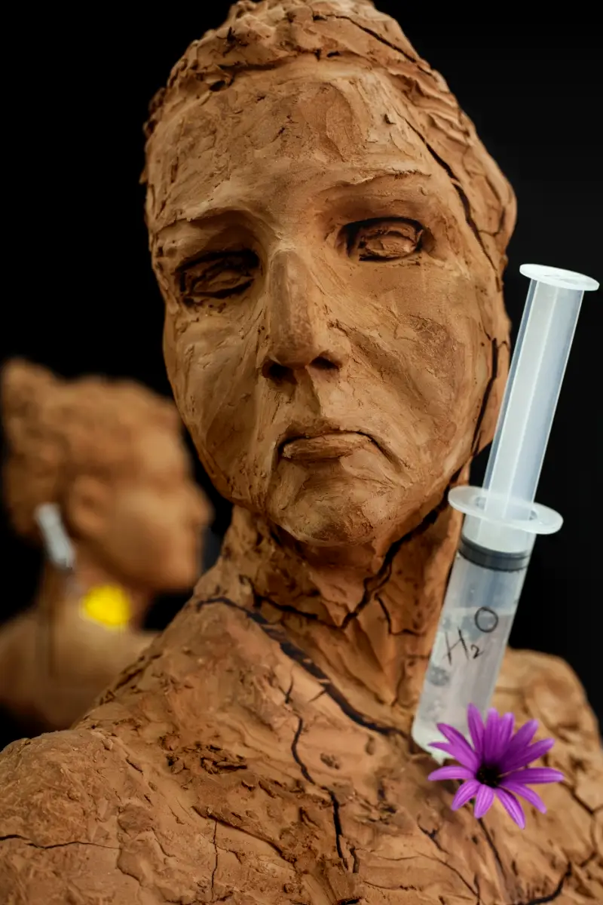
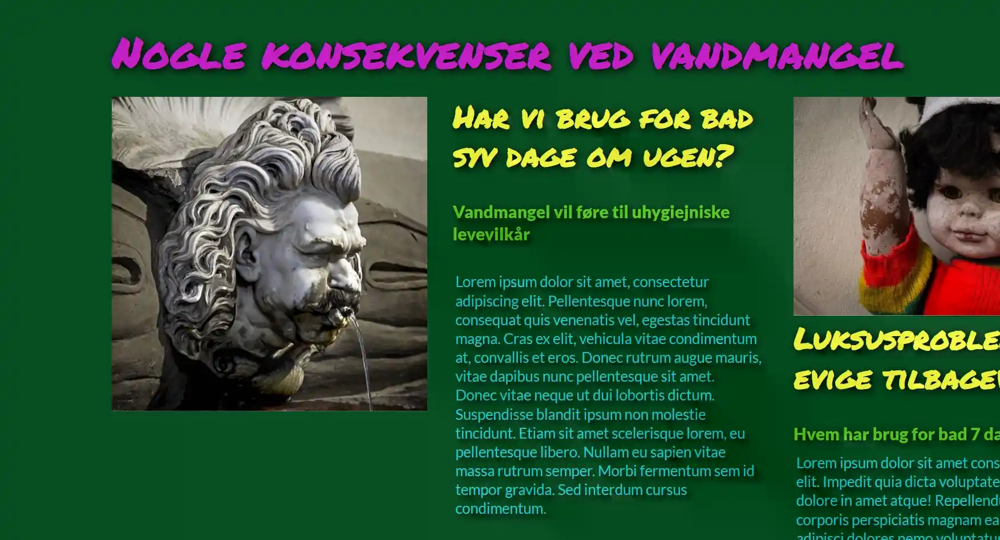
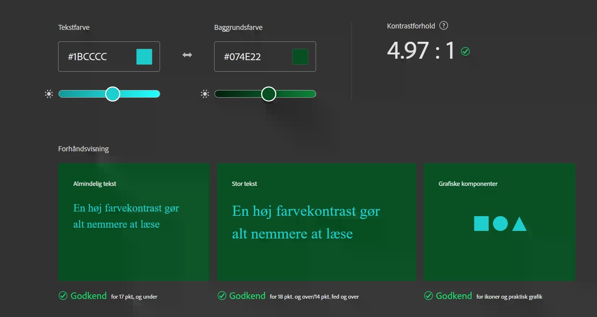
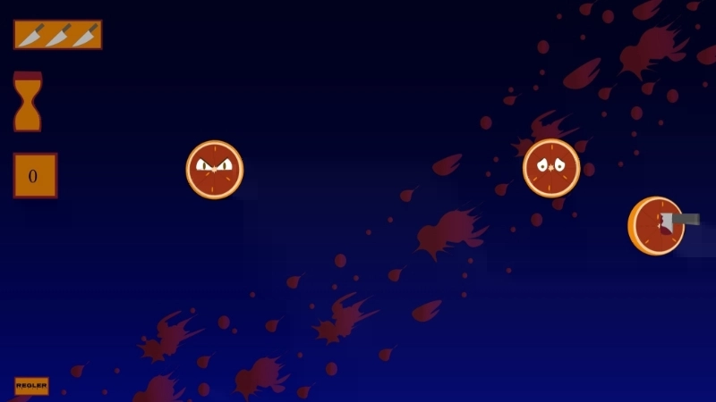
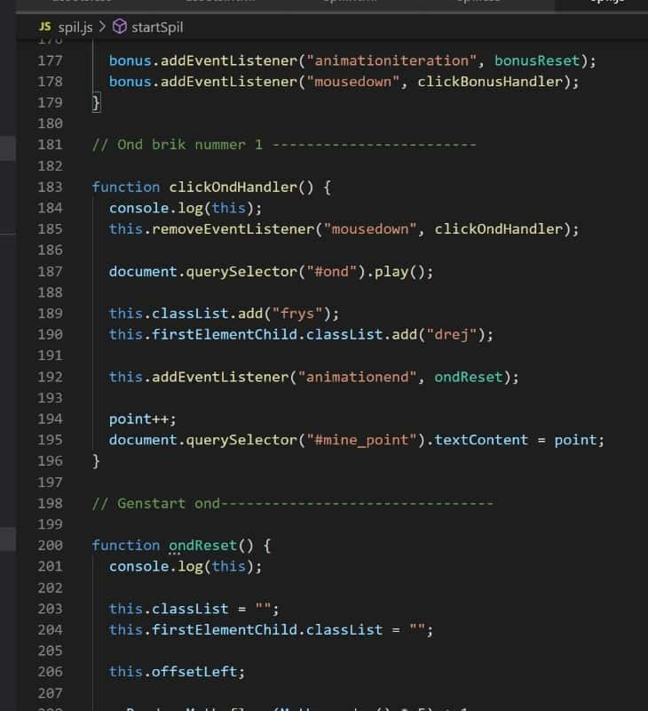

Til toppen
Tema 2 Grundlæggende web
Overordnede læringsmål
På tema 2 fik vi grundlæggende viden og redskaber til at kunne designe brugergrænseflader, lave digitalt indhold, opsætte websider og gøre dem responsive.
Hvad har jeg lært
Jeg lærte at samarbejde med andre om at researche og pitche en tildelt stil. Jeg arbejdede med Moodboards og Stile Tile som en metode til at beskrive stilen. Jeg blev præsenteret for grundlæggende viden om komposition og layout, såsom gestaltlove, kontraster, gridbaseret layout farveharmonier, rytme i layout, rule of thirds ect. som er metoder til at designe brugergrænseflader. Jeg lærte at skalere billeder i XD og designe et splashbillede til min forside i Photoshop. Jeg lærte også at lave mock-up i XD ud fra en wireframe Jeg lærte om html efterfølgende opsatte med HTML i VS code og stylede med CSS. Jeg stiftede bekendskab med forskellige sider, hvor vi kunne søge efter viden eller øvelser inden for kodning fx w3 school eller codefreecamp. Jeg lærte at lave mobilefirst og tilpasse CSS med media-quaries for at gøre sitet responsivt. Jeg lærte at bruge grids til at placere vores indhold på websiden. Jeg lærte løbende igennem forløbet at validere min side og rette den for eventuelle fejl inden upload.
Eksempel fra processen
Jeg har her valgt at tage udgangspunkt i flashbilledet som jeg designede ud fra en brutalistisk stil. Splashbillede til mit website i Photoshop. Layoutet skulle være simpelt, klart i udtrykket og afspejle indholdet på siden. Men da jeg havde brutalismen som stil, ville jeg gerne have det også udtrykte noget grimt, farverigt og kaotisk. Jeg valgte mørkere mosgrøn baggrundsfarve sammen med meget skrigende lysere farver. Jeg valgte at tegne en asymmetrisk diagonal-krydskomposition med brush tool og derefter placere de figurer jeg havde klippet ud i mit diagonale kryds. Figurerne tegnede jeg efterfølgende op med en neon-gul streg.
Jeg valgte i Adobe at lave et farveudtræk af mit splashbillede og bruge farverne i indholdet på mit website. Med brutalismen i baghovedet brød jeg konventionerne og lavede en mørk baggrund med en lys brødskift, jeg havde dog tjekket via adobe color hvor den blev godkendt. Jeg valgte neonfarver til selve overskrifterne. Jeg lagde lidt skygger på alt min tekst for at fremhæve den.
 Responsive_v2
Til toppen
Tema 3 Grundlæggende UX
Overordnede læringsmål
På tema 3 fik vi en grundlæggende om viden, redskaber og metoder til hvordan vi kunne produktudvikle og skabe et samspil mellem forbrugerne og brugergrænseoverfladen.
Hvad har lært
Vi fik alle en case, hvor vi skulle lave en website der solgte T-shirts. Ud fra konceptet skulle vi lære at researche og produktudvikle ud fra en selvvalgt målgruppes behov. I researchdelen var vi inddelt i grupper, så vi kunne hjælpe hinanden på trods af, at selve opgaven var individuel. Jeg lærte kildekritisk at undersøge markedet inden for vores produkt. Jeg lavede et interview og survey som en henholdsvis kvalitativ og kvantitativ metode til at teste en målgruppe for at indsamle data om brugerens adfærd i forhold til vores produkt. Vi lærte at bruge 5 Days Sprint til at lave skitser af en funktionel website, som vi afprøvede ved en fernisering og efterfølgende rettede til. Vi lavede Moodboard og Stile Tile for skabe den visuelle del af designet, vi tog billeder til prototypen i RAW, som vi efterfølgende redigerede i photoshop. Vi startede derefter med at lave en prototype i XD med hjælp fra UI-kits. Yderligere blev introduceret til UI konventioner såsom copy- og microcopy -writing som vi kunne bruge med UI-elementerne til at hjælpe brugeren med at navigere rundt på sitet. Jeg lærte i samarbejde med andre fra holdet metoder til at teste hinanden produkter løbende igennem forløbet. Vi afsluttede forløbet ved i grupper at pitche vores produkt for hinanden.
Eksempel fra processen
en del af 5 Days Sprint lærte vi at teste vores design. Vi blev introduceret til forskellige test såsom, 5-sekunders test, bert-test, five-act-interview. Jeg har taget valgt at tage udgangspunkt i five-act-challange, som vi i små grupper brugte til at teste hinandens design for at undersøge brugeradfærd på vores produktsite og sitets usability. Five-act-interview strukturen består af 5 punkter Friendly introduction, Context questions, Introduce prototype, Tasks og Debrief. Vi sprang i vores tilfælde friendly introduction og debriefen over, da vi udførte testen på holdkammerater. På baggrund af undersøgelsen kunne jeg rette min prototype til, ud fra den respons jeg fik. Hele processen med færdige produkt skulle til sidst pitches foran en gruppe. Efterfølgende var der feedback fra gruppen, som gjorde det muligt at implementere yderligere rettelser til den færdige prototype.
Survey research
Test af prototype
Pitch med prototype
Feedback fra pitch
Prototype med rettelser
Til toppen
Tema 4 Grundlæggende animation
Overordnede læringsmål
På Tema 4 grundlæggende animation blev vi introduceret til JavaScript, som bliver brugt til at skabe interaktion på et website. Vi udviklede et simpelt spil som vi selv designede fra bunden og kodede det efterfølgende ved brug af CSS-animationer i samspil med JavaScript.
Hvad jeg har lært
På Tema 4. designede jeg et simpelt spil fra bunden ved brug af CSS-animationer i samspil JavaScript. Vi startede med at lære om gamemechanics, der beskriver hvilke krav og regler der er for, at et spil fungerer. Vi gik videre til idéfasen, hvor vi i grupper startede med at finde inspiration til spillet, et eksempel på en metode til at finde idéer til spillet var krydsmetoden, hvor vi skulle udvælge et ord (Verber, setting, ting) fra hver 3 kolonner som kunne danne rammen for spillet. Vi lavede hver især skitser med en scene og de figur-elementer der skulle indgå i spillet og efterfølgende lavede vi en papirprototype af spillet, som viste både antal liv, tiden, point og hvordan spil-animationerne skulle udfolde sig. Vi lærte om karakterdesign, som vi kunne gøre brug af i vores design, det kunne fx være solid drawing, asymmetri, babybias. Vi lærte at rentegne vores skitser af vores spilelementer i illustrator i vektor ud fra lukkede former. Vi tegnede vores baggrundsdesign, figur- og UI-elementer ud fra grundlæggende komposition og layout principper. Vi lærte at lave et aktivitetsdiagram som beskriver, hvordan spillet ville forløbe, senere udvidede vi det til et state-machine diagram som er mere detaljeret. State-machine diagrammet vi kunne bruge til at se, hvordan de forskellige states er forbundet og hvordan de udspiller sig.Vi startede med at opsætte i HTML som vi har lært og derfra gik vi videre til CSS hvor vi indsatte alle vores spil-elementer som svg’er. I CSS’en lavede jeg de animationer, jeg havde valgt skulle være i med mit spil og med JavaScript fik jeg dem til at udføre den valgte handling.
Vi lavede en webside med en assetliste og et dokumentationssite til at dokumentere hele vores proces. Da spillet var færdigproduceret, var der til slut en fernisering for vores grupper. Her havde vi hver især lavet en en survey, som sammen med spillet skulle afprøves og besvares. Ud fra den feedback vi fik på vores spil, kunne vi eventuelt rette til, hvis der var noget der ikke fungerede.
Eksempel fra processen
Jeg har valgt at tage et eksempel fra mit spil, hvor jeg bruger JavaScript. Jeg har valgt at beskrive hvordan animationerne udfolder sig for en af mine brikker, i det her tilfælde brikken Ond1. Jeg har valgt at tage udgangspunkt i funktionen startSpil, hvor vi med classList. tilføjer vores animation som jeg har lavet i CSS med @keyframes. I mit tilfælde falder min brik, så jeg tilføjede ”falling”, som får min brik til at falde oppefra og ned.
Med addEventListener har jeg tilføjet 2 forskellige events, den først er animationiteration, der fortæller hvor mange gange animationen skal køre. Jeg har i min CSS skrevet den skal køre uendeligt. Det andet event er mousedown, som betyder at handlingen sker, når man klikker musen ned. Når en animation er udført, kaldes den funktion, der står i samme parentes. Det betyder fx, at når vi har klikket mousedown, kaldes i det her tilfælde funktionen clickOndHandler.
I funktionen clickOndHandler bruger jeg removeEventListener på samme måde som addEventListener, men denne gang fjernes mousedown, vi bliver efterfølgende i samme funktion. Nu starter de animationer, der forløber efter mousedown eventet er færdigt. Med document.querySelector ("#ond").play(); kalder jeg den lyd, jeg har lavet til min brik og med .play afspiller den. Med classList.add. ”frys” på min container fryser min brik og med en classList med add. ”drej” på min sprite begynder brikken at rotere og forsvinde. Den efterfølgende add.EventListener med eventet animationend fortæller os at animationen er slut og sender os videre til funktionen ondReset.
Temaopgave
Til toppen
Grundlæggende indhold
Overordnede læringsmål
På tema 5 fik vi grundlæggende viden og metoder vi kunne bruge inden for video og billedproduktion. De færdigheder vi fik på dette tema, skulle vi sammen med de færdigheder vi har fået med fra tidligere temaer, bruges til at redesigne en website for en virksomhed.
Hvad jeg har lært
På tema 5 skulle vi i grupper lave fælles projekter. Vi skulle lære at lave og redigere video i Adobe premiere pro og redesigne en hjemmeside for en virksomhed. Før vi gik i gang med denne opgave, lavede vi i grupper af to en pilotopgave, hvor vi lærte om både postproduktionen og produktionen fx lærte vi om forskellige kompositioner, opstillinger og hvordan vi skulle optage billederfrekvenser. I efterproduktionen skulle vi redigere selve video i Adobe programmet premiere pro ud med hjælp fra klippeteknikker vi var blevet introduceret til. Efter pilotopgaven skulle vi i 4 mandsgrupper i gang med at redesigne en hjemmeside med en video. Vi lærte at lave trelloboard og holde scummøder, så vi kunne skabe overblik over, hvilke opgaver der skulle udføres. Vi startede med at søge efter en virksomhed, hvis hjemmesider trængte til en opfriskning. Da vi havde fundet en virksomhed, oprettede vi et dokumentationsdokument som vi løbende udfyldte. Vi startede med at lave research, vi lavede en survey og berttest med et link til virksomhedens nuværende hjemmeside for at undersøge hvad målgruppen mente om siden og hvad de prioriterede højst på et website. Vi lavede Moodboard, Style Tile, wireframe og prototype i fællesskab for den nye hjemmeside. Vi stod hver især for at kode en side, jeg stod for menu siden. Vi afsluttede projektet ved at pitche vores proces og endelige produkt foran en underviser og en gruppe medstuderende.
Eksempel fra processen
Jeg har valgt at tage udgangspunkt i pilotopgaven. Her skulle vi finde en person, som havde en passion for det de lavede. I grupper af 2 skulle vi lave interviewspørgsmål som skulle bruges i videoen. Vi optog interviewet både på video og med ekstern lyd, som vi så kunne tilføje i efterredigeringen. Vi lærte at lave b-rolls som er så billede frekvenser der er med til at støtte handlingen i vores interview. Vi redigerede vores videointerview individuelt i premiere pro ud fra tilegnede viden. Jeg gjorde fx brug af continuety klipning i form af mine b-rolls til at dække over jumpcuts, jeg havde lavet i min klipning af interviewet.
Jeg brugte effekter i form af transsisions til at lave blødere overgange mellem mine klip. Jeg lavede colorgrading, en intro, en outro og lover lower third etc. på videoen. Jeg havde dog også fejlkilder i min video fx mit establishing shot der godt kunne være skudt i et større billede, i det her tilfælde hele værkstedet, for at give en større helhed til projektet. En anden fejlkilde var at personen vi interviewet ikke kunne stå stille når han stod frit, så vi var nødt til at rykke ham tilbage i billedet, så han kunne holdet i bordet. Det udgjorde nogle problemer såsom at han kom for tæt på baggrunden og det ændrede på lyssætningen og kompositionen. Vi dog sørget for at der var luft over hovedet og at kameraet var stillet i en højde, der svarede til personen.
Til toppen
Screendumps fra min portfolio-proces
screenshots fra illustrator af min forside